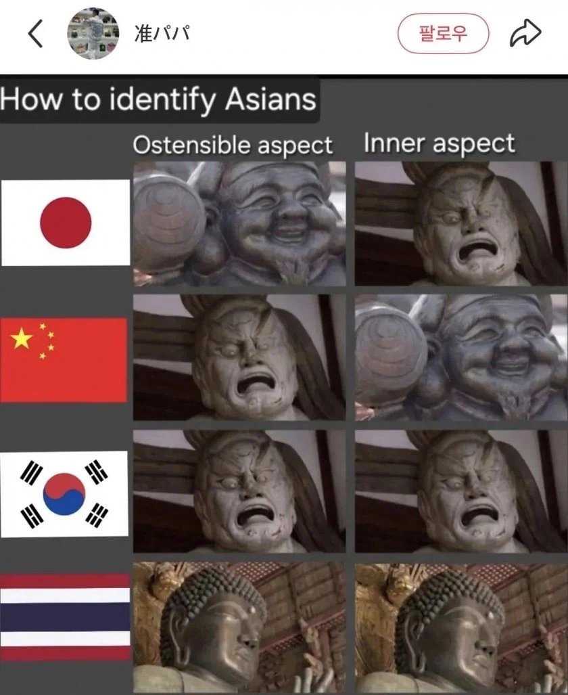
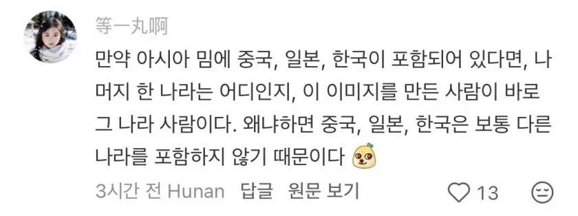

한중일 특1) 서로를 ㅈ같은 상대로 여김
한중일 특2) 서로 외의 아시아 국가는 비교선상에 넣지조차 않음


한중일 특1) 서로를 ㅈ같은 상대로 여김
한중일 특2) 서로 외의 아시아 국가는 비교선상에 넣지조차 않음
태국새끼들이 만든 자료
팬시아시안 벽 씨게 치네ㅋㅋㅋ
ㅈ같은 '상대'로 느끼는것 자체가 말은 통한다는 반증이었던것..
사실 한중일 외엔 국기봐도 먼 나란지도 몰겠어
ㅋㅋ 진짜 개성없긴 함
싫지만 같은 리그에 소속된 팀과
아예 다른리그라서 누가 누군지도 모르는 팀의 차이
2가 진짜긴 하네 ㅋㅋㅋㅋㅋㅋ
개싫어하는데 누구보다 인정함 ㅋㅋㅋㅋㅋㅋ
싫어하려면 잘 알고 있어야 한다고~ ㅋㅋㅋㅋ
생각해보니 그러내
말은통하는놈들
그외 정글아시안 우가우가들
한중일이나 그나마 말이 통하지 나머지 아시아는 진짜 같은 사람이 아님
레딧에 한국밈이 올라갔다면 그 업로더가 한국인인것과 비슷한 이치임
이번에 다시느낌 ㅋㅋ